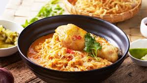
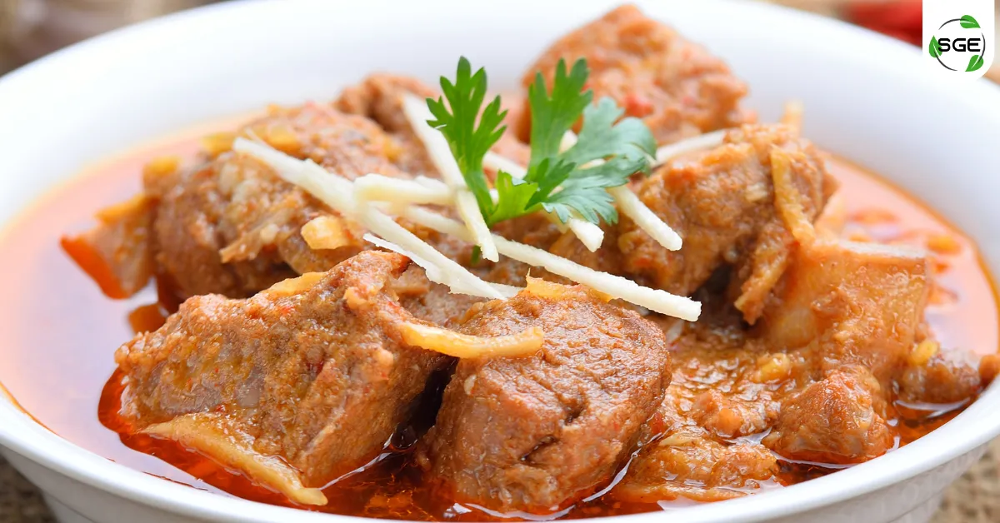

"อาหารภาคเหนือ"
"ข้าวซอย"
“ข้าวซอย” คือตัวแทนความอร่อยที่เป็นไอคอนิกของอาหารภาคเหนือ (ล้านนา)
แต่รู้หรือไม่ว่าเบื้องหลังรสชาติอันนุ่มนวลและเข้มข้นนี้
มีเรื่องราวการเดินทางข้ามวัฒนธรรมที่น่าสนใจมาก จนในยุคปัจจุบัน
(รวมถึงการจัดอันดับระดับโลกหลายครั้งในช่วงปีที่ผ่านมา)
ข้าวซอยมักจะติดอันดับ "ซุปที่ดีที่สุดในโลก" อยู่เสมอ

"น้ำพริกหนุ่ม"
ถ้าถามถึงราชาแห่งน้ำพริกภาคเหนือที่ป๊อปปูลาร์ที่สุด คงหนีไม่พ้น "น้ำพริกหนุ่ม"
เครื่องจิ้มสีเขียวหม่นที่มีเอกลักษณ์เฉพาะตัว กินคู่กับแคบหมูและผักลวกเมื่อไหร่เป็นต้องเจริญอาหารเมื่อนั้น
แต่เบื้องหลังความอร่อยที่ดูเรียบง่ายนี้ แฝงไปด้วยภูมิปัญญาและเรื่องราวที่น่าสนใจไม่แพ้เมนูอื่นเลย

"แกงฮังเล"
“แกงฮังเล” (หรือที่คนเหนือเรียกสั้นๆ ว่า แกงฮังเล หรือ แกงฮินเล)
เป็นสุดยอดเมนูเฉลิมฉลองของภาคเหนือ เป็นแกงหมูที่มีความเข้มข้น รสชาติกลมกล่อมสามรส
และมีกลิ่นหอมของเครื่องเทศโดดเด่น ถือเป็น "ราชาแห่งแกงล้านนา"
ที่มักจะปรากฏในงานบุญ งานขันโตก หรือวันพญาวัน (วันสงกรานต์)
เท่านั้น เพราะต้องใช้เวลาเคี่ยวนานและมีขั้นตอนที่พิถีพิถัน
